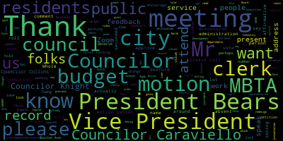
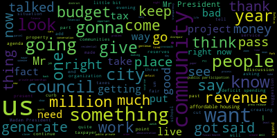
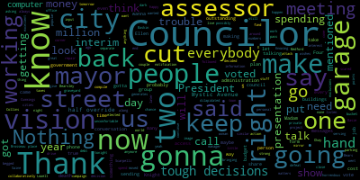
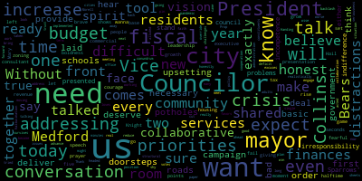

AI-generated transcript of City Council 06-14-22
English | español | português | 中国人 | kreyol ayisyen | tiếng việt | ខ្មែរ | русский | عربي | 한국인
Back to all transcripts
[Morell]: 24th regular meeting of the Medford City Council June 14 2022 is called to order, Mr. Clerk, please call the role.
[Hurtubise]: Vice President Bears present. President Collins present tonight. President.
[Morell]: Councilor Tseng present present row, present seven present zero absent, please rise to salute the flag.
[Bears]: Madam President, Vice President Bears motion to take papers 22-381 and 22-384 suspend the rules to take those papers on the motion of items and bears to suspend the rules to take papers 22-381 and 22-384 out of order seconded by Councilor Knight.
[Morell]: Mr. Clerk, please call the roll.
[Hurtubise]: Yes. Yes.
[Unidentified]: Yes. Yes.
[Morell]: Yes, seven affirmative, zero negative. The rules are suspended. 22-381, petition for zoning amendment. The undersigned property owners of the parcels located at 222-230-236 Boston Avenue and 67 North Street comprising approximately 1.4 acres petition to change the current zoning designation from industrial to office two as rewritten in the zoning bylaws. signed for each address 222 Boston Ave, 230 Boston Ave, 236 Boston Ave, and 67 North Street, John Walsh. I do believe we have members here who would like to present on the petition. Name and address for the record, please.
[SPEAKER_00]: John Walsh, 222 Boston Ave, Medford.
[Morell]: Thank you, please go ahead.
[SPEAKER_00]: Good evening, President Morell, city council members, and Medford residents. My name is John Walsh, and I'm a petitioner for amending the zoning map to include four parcels located on Boston Avenue. All would be within the newly created Office 2 Zoning District. As the petition reflects, the parcels included 222, 230, 236 Boston Avenue, and 67 North Street. I am the president, treasurer of the Elizabeth Grady Properties and the managing member of 236 Boston Avenue LLC and 67 North Street LLC and make all decisions. The parcels mentioned are located in the industrial zone and comprise approximately 1.4 acres. The sites are contiguous and in close proximity to the newly constructed Midford Tufts Greenline Station, which allows for convenient access to additional public transportation. With the progressive creation of the new zoning district for the council and other city agencies, the site is now poised for life science among other research and development companies. The conversion of these parcels from industrial to O2 would allow for more modern buildings substantial increase in tax revenue and permit fees, gainful employment within the city, and create a mixed use area of the opportunity in that section of the city, along with more green space. The property locations clearly seem to fit with what was intended by the city creating the O2 district. In conclusion, I respectfully request approval of this petition as an amendment to the zoning map. Thank you for your consideration.
[Morell]: Thank you, Mr. Walsh. Councilor Knight.
[Knight]: Madam President, this is something I'm very excited about. This is the first petition that we've seen come before us after our newly codified zoning ordinance. This is something that we worked on specifically, actually, to create an O2 district so that we could generate life science opportunities here in the community. Mr. Walsh is a property owner in the community, as he said. He owns a substantial amount of real estate here in Medford. He's been a good neighbor, a good taxpayer. Mr. wash I was wondering if you could tell us a little bit about the revenues that the city will generate down through this process if you could.
[SPEAKER_00]: Some from the analysis and I we've submitted it previously, economic development and community development, the aviation young real estate brokerage firm said. The property of about 200,000 square foot development, the permitting fees would be in the $3 million range one time, and the tax revenue on a 200,000 square foot building would also exceed $3 million per annum.
[Knight]: And can you tell us right now what an estimate is we're getting out of that parcel?
[SPEAKER_00]: Collectively for all four parcels in the neighborhood of about $100,000 plus.
[Knight]: I'm not much of a math guy, but it sounds like quite an investment in quite a worthwhile initiative for this community to look at. You know, we've talked about our commitment to life sciences, bringing jobs to this community to pay a living wage. We talked about, you know, the need to diversify our CIP in residential districts to keep us competitive with a strong commercial tax base so that I residential property or there's not burdened with balancing the tax tax burden on their back. I think this project makes sense, Madam President, I support it wholeheartedly will prove.
[Morell]: Thank you. Thank you, Madam President, join on.
[Caraviello]: I know, um, Cummings is probably going to be right right around the corner. Are you working collaboratively with them to maybe get into two buildings to maybe have a mirror image so it doesn't look like two separate buildings? Is that something you're doing?
[SPEAKER_00]: Yeah, Cummings is in favor of the project and they spoke to Victor as recently as today in favor of it.
[Caraviello]: But is it going to be like similar in look? So one doesn't look out of place?
[SPEAKER_00]: I'm sure that they'll blend in their council.
[Bears]: Thank you. Thank you, Madam President. Thank you, Mr. Walsh for being here. I think this is an exciting use of those parcels to take advantage of the new office to zone and bring in the commercial development that we've all been talking so much about as a necessary piece of a revenue strategy to effectively fund our city budget, which I'm sure you'll hear about in a moment from me. Pursuant to Chapter 48, I believe we have to refer this to the Community Development Board, and then we will receive their comments, and then we could consider it after a duly noticed hearing. At this point, I certainly have no objections. I would motion to refer this to the Community Development Board, and also encourage them to initiate their process and bring it back before us as quickly as they can.
[Morell]: Thank you. Thank you, Mr. Zimberis. Any further discussion from the Council? I just want to reiterate what Park Susan Bair says, this is part of a process that this would be referred to the Community Development Board where they would have meetings, they would give us an opinion, and then we'd vote whether or not to accept this zoning proposal before us. Is there anyone from the public who would like to speak on the proposal in front of us? Seeing none, so. Councilor Knight you had a motion to approve. So on the motion of, I'll just say it because you said it first. On the motion of Councilor Knight to refer to the Community Development Board, seconded by Vice President Bears. Mr. Clerk, please call the roll.
[Hurtubise]: Vice President Bears. Yes. Councilor Caraviello. Yes. Councilor Collins. Yes. Councilor Knight. Yes. Councilor Scarpelli. Yes.
[Morell]: Can he unmute himself?
[Hurtubise]: He's on there and he's muted. Hang on. He said he's having a problem with his connection. If you could turn his camera on and indicate which way he's going to vote, that'd be fine too. I'm going to pass Councilor Scarpelli and go to Councilor Tseng, then we'll come back. President Morell, I'm gonna call you too, but then we'll get Councilor Scarpelli again.
[Unidentified]: Yes. Okay.
[Morell]: Councilor Scarpelli, are you, can you hear us? Are you able to turn on your video to gesture to vote? Hang on.
[Hurtubise]: Let me text him. I think he says he's having trouble. We can move it without him.
[Morell]: Yeah, we can count him as absent.
[Hurtubise]: Okay. All right. I'm gonna count him absent for technical reasons. Okay.
[Morell]: So six in the affirmative, one absent.
[Hurtubise]: Yes.
[Morell]: Yes. Thank you. Seven in the affirmative, zero in the negative. The motion passes. Thank you for being here.
[SPEAKER_00]: Thank you very much.
[Morell]: Moving to 22-three eight four offered by Vice President Bears, be it so resolved by the Medford City Council that Vice President presentation regarding the city budget and the FYI 2023 budget crisis by President Bears.
[Bears]: Thank you Madam President. I don't normally go without a mask in the chamber but given the fact that I think. This is such an essential topic and maybe people might want to see my lips moving as I speak for a number of minutes. That's why I've taken my mask off if anyone has questions. I just want to start before I give my presentation to say that My attitude as a councilor over the past two terms has been one of collaboration and building trust and bringing this community together to advance shared goals and shared priorities to build a better future for our community. I think that this council has gone above and beyond to try to work with this mayor and her administration on a number of issues that run the gamut of all the priorities that we have. And when it comes to this budget process that that return collaboration has not been there. One of the things that has been really most impactful to me over the past week, 10 days, two weeks, it's blurring together a little bit, has been just how many people have reached out and communicated that they don't know what's going on. That they're not sure why the city budget is in the position that it's in. They're not sure why suddenly, you know, changes were made to the proposed budget at the last minute that have such significant impacts on so many of our city departments and our public schools. And that lack of trust or loss of trust in the integrity and the communication coming from the city administration is going to have impacts going forward. If it isn't repaired. My goal here is to try to explain from what I know from the budget meetings we've had from the discussions that we've had with city staff. and other entities involved in these decision-making processes, what we know, why things happen the way they happened, and what we can do to ask that they be fixed. And again, it is essential that the administration take action to restore the trust of this council, to restore the trust of the residents of this community in the information and the integrity of our budget process And I hope that by providing a shared set of facts that we can all agree on, that sets the table for the next steps of accountability and of making a plan to address these problems. So I'm going to now share my screen and give this presentation.
[Morell]: And Vice President Bears, I will hold you to the rules of the council as far as timing on this.
[Bears]: Yes, if I do run over, I do apologize. Thank you, Councilor Caraviello. This is the title slide. Medford City Budget Review. Long-term underfunding leads to yearly shortfalls, crumbling infrastructure, and vulnerability to shocks. The causes of our city's budget crisis go back decades. The City of Medford does not bring in enough revenue to meet the spending needs for our city services, for public schools, and for the maintenance of city buildings and infrastructure. There are many reasons why one proposition two and a half limits the growth of the city's main source of revenue property taxes to two and a half percent per year, plus new construction and major renovation also called new growth. That's below the rate of inflation and certainly below the rate at which the cost of a city grow like insurance trash removal and construction costs. We've also had for a long time a lack of new commercial development that's restricted a major tool to raise revenue. This council has taken action on that with the new zoning ordinance as we just saw. before this presentation where we are finally bringing in the kind of projects that the city has needed for a long time. The impacts of our budget crisis are serious and longstanding. We have bare bones budgets and low staffing levels for most of our city departments, like our Department of Public Works or our planning department, our law department, our library, health department and recreation. We heard a number of those stories tonight. And it means that Medford provides fewer services than our residents deserve. We've seen a very small real dollar growth to the Medford Public Schools budget after you adjust for inflation, limited purchase of new materials and resources and new staff hires, reliance on fees from families to fund programs, limits on proposals for our educator pay and their union contracts, and years of deferred maintenance that lead to costly repairs. Some of those deferred maintenance needs we see every day. huge infrastructure backlog in the hundred million dollar range just for our roads and sidewalks we're paying out thousands of dollars a year and claims for injuries and property damage crumbling city and school buildings, like our fire headquarters, Medford High School pieces of this very building that we're in right now City Hall, and not enough investments in our capital maintenance to even lower the backlog. City and school staff are often then scrambling to fund operating budgets through one-time grants. I can't tell you how many times we've had someone before us saying, you know, we'd be better off with a grant writer, because that's going to bring in more money than advocating for the city, or I'm writing grants all the time, or we're trying to organize volunteers. These are things that should be happening in an operating budget. The next two slides are to show you a couple of charts that illustrate this. This is the mayor's initial proposed budget for fiscal 23 we were lucky to be presented with this last Tuesday on a single top sheet of paper here, instead of a budget book as would normally be provided. The first column is our recurring revenue what we can expect to come in every year. The second column includes the one time revenue that this administration had been expecting to come in to fund the budget of about $11.25 million. That one time revenue is what we call a structural deficit. It's revenue that we can't expect to have in the future, but we're still using it to balance our operating budget. And here it says a definition of structural deficit, use of one-time revenue, in this case ARPA, that's federal money, revenue replacement, one of the specific restricted uses, and free cash reserves that were used to cover recurring spending. The third column here is the initial proposed spending that was initially proposed prior to June of 2022. And then the column here is an estimate of potentially what we actually should be spending. Now, this is an estimate because we don't actually know what we should be spending. I estimated that perhaps our costs really, our needs are really 20% higher than the amount that we're spending. It's my hope that it's less than that. It's certainly my hope that it's not more than that. But I felt that that was a relatively good estimate that we could use in the short term And as everyone here knows what I've been campaigning on and advocating for for several years, is that we assess our needs for our operating budget and our capital assets, and then make a plan to raise the revenue to actually meet those needs. This is what the same chart would look like just the revenue and spending amounts over the last three fiscal years, and again fiscal 23 is the mayor's initial proposed budget before this month of June, 2022. before the pandemic, we were not using any one time revenue to balance the budget in fiscal year 21 we used almost $6 million from our free cash reserves to balance the budget. Last year we used over $12 million in ARPA revenue replacement to balance the budget. And this year the mayor's what the initial budget proposal that had been worked on for months had rested on was the assumption that we would use 11.25 million a piece from that from free cash and about 8 million in ARPA revenue replacement to balance this year's budget. What you can also see is that our estimated needs deficit isn't shrinking over this time, it's growing. So the gap between what we're spending every year and what we should be spending to provide the services that residents need and maintain and repair our capital assets has been growing worse over the past four years. The key takeaways here are that we have a long-term city budget crisis. Our city budget for years has had an unstudied and unknown needs deficit, meaning that our spending needs are greater than the available revenue. Starting in fiscal year 21, the city also began to have a structural deficit, meaning the use of one-time revenue sources to balance the city budget. This city needs a short-term plan to eliminate the structural deficit and a long-term plan to eliminate the needs deficit. The only major options before us in terms of addressing these are the following. One, more budget cuts to end the structural deficit, further reducing services and increasing the needs deficit. In the medium to long term, we can increase new growth revenue from development, especially new commercial and mixed use development that brings in the most money based on how our tax structure works, but as anyone in construction knows, going from the process that we started here tonight for a new development through design and permitting and then construction is a multi year process. So any building that we permit today is not going to help us in the next two, three, maybe even four fiscal years. In terms of our operating budget, we could also raise revenue through a proposition two and a half override, which would close the structural deficit. And then we could actually assess the needs deficit to determine if we need a further override for our operating budget. Finally, for our capital expenses, we could raise revenue through a proposition two and a half debt exclusion to fund items like a new fire headquarters, a new Medford High School, building maintenance and renovation and fixing our $100 million road and sidewalk backlog. Now, I've just told you about the long term context that we are in as a city. What people have been incredibly concerned and stressed and confused about is why we've had issues in this fiscal year budget. The title of this slide is shortfalls and shocks in fiscal year 23. It's not the library's fault. The fiscal 23 budget process rested on inaccurate revenue assumptions. Now, what's been going around the city is that money came in from library donations and that's why, you know, we don't have the money we need. The answer is really a little different. Last minute cuts to the proposed fiscal 23 budget were an unnecessary curveball that resulted from a lack of adequate planning. The fiscal 23 budget numbers presented so far in this presentation have been the initial proposed budget prior to June 2022 on June 2 2022 this council received an email from the city administration that stated that we did not have the expected ARPA revenue replacement figure that was being planned to use one-time revenue to balance the budget. And therefore, they were going to be presenting us with an amended budget that had a significant amount of cuts relative to the budget that they had been working on and planning for months and that departments had sent in their figures about. Throughout the fiscal year 2023 budget process beginning months ago, the city administration assumed that we would have between seven and 8 million in one time ARPA revenue replacement for the budget this year. But according to discussions with city staff in these meetings with the CLA consultant as well from Clifton, Larson and Allen, I believe who was helping with the auditing and federal compliance, it was clear months ago that that seven to $8 million figure could not be guaranteed and that a final figure could not be calculated until the city's books were reviewed and cleaned up after 10 months from July 2021 to May 2022, where the city did not have a chief financial officer. Sometime in late May or early June, the mayor and the leadership team were given a final fixture figure of just approximately $4 million for ARPA revenue replacement in the fiscal 23 budget, due to the US Treasury Department's ARPA rules that counted several private donations to our library into our city funds and counted them as revenue and for the terms of the final revenue replacement calculation. I want to be clear with the residents. Medford did not lose any money, but now 3.75 million or so in revenue that had been assumed for the available for the fiscal 23 budget must now be spent on different restricted ARPA uses. This assumption that we would have about $4 million that we did not have for this budget, led the administration to make last minute crop cuts across the proposed fiscal 23 budget for our city departments and our public schools. If this situation and the uncertainty had been shared months ago with the city council and with the public, the city and its departments and the public school system could have prepared for multiple revenue scenarios. The city council would have been informed as we have been requesting for months about the financial situation of the city and our city staff and our Medford residents wouldn't have experienced such urgent and unexpected reductions to the proposed fiscal 23 budget at the very last minute. This is what the situation looks like in a chart. The first column is the initial proposed revenue, assuming 11.25 million in one time revenue that reduced to about 7.5 million due to the inaccurate assumptions about the ARPA revenue calculation. What that means for our city is that spending is also significantly reduced by about $5 million a little less than $5 million, including the school department having 2.8 million less than they had expected city departments, having 1.7 million less than expected, and a small decrease in the debt service payments for the city. What does that mean in real terms. It means that city departments that have been desperately asking for additional staff for years will not be getting it. It means that the public school system laid off more educators than they expected for the next year and isn't doesn't know if they'll be able to bring them all back. And it means that across the city, we are asking our city departments and our public schools to once again, do more with less. Now, I'm not saying that I have a magic bullet here that could have solved it, but I do know for a fact that finding out at the beginning of June, that we have to make significant budget reductions in the proposed budget has led to us not having a budget book for the city council, not knowing the information we need to know or the full picture of our city budget. It's led to the school department finance team scrambling to find the cuts that would have the least impact on our students and our teachers in the classroom. It's led to city departments coming to us, like our library did tonight, and saying that they are not going to have enough basic funding to provide the key and core services that they should be providing. And at the end of the day, what it means is that we are once again, at best, kicking the can down the road, and at worst, actively creating situations that will hurt people and reduce services in this community. I want to close my presentation with some action recommendations and explain to residents how they can help. One, I have some recommendations to address our long term budget needs. First, we need to determine the actual budget needs deficit for the city of Medford's operating budget, and our capital needs pieces of this work have been done, the school committee process over the past two years has significantly improved to where they are actually beginning to assess their need and share that number. In addition, departments like our Department of Public Works have done comprehensive reviews of capital assets like our roads and sidewalks, so we actually have an accurate picture of how big the problem is and what it will cost to solve it. But those are not comprehensive assessments of our needs deficit for our operating budget and our capital assets. Second, We I would implore the mayor to develop and release a revenue generation plan to meet the budget needs deficit to set goals and benchmarks that can be tracked and provide a clear and reasonable timeline for that over the next 10 years. I'm not saying that all the new revenue we need needs to come from specific sources. My best hope is that it can come from sources like new growth and commercial development, and the exact kind of thing that we're trying to bring into this city, that we've seen cities in similar positions in recent history like Cambridge and Somerville do, where they've had that commercial development and mixed use development that has significantly grown their revenues. However, I'm also not ruling out without studying the other options before us to raise revenue. two for the short term. My recommendations are one that the city council and the school committee hold the mayor accountable to release all information and a clear timeline for the assumptions that were made in the FY 23 ARPA revenue replacement calculation that led to the fiscal year 23 budget cuts we deserve to know what the administration knew, and when they knew it, because the last minute release of this issue and information has caused significant harm and pain and a district just, you know, disruption to the trust and loss of trust in the information coming from the city administration. The first step to repairing that is to let us know the truth of what happened, why the decisions that were made were made, and then to acknowledge any mistakes and move forward from that point. Without that restoring trust will be incredibly difficult. Second, the mayor must release a full accounting of the ARPA funds from the Federal American Rescue Plan Act that were spent in fiscal year 21 and fiscal year 22, then share how much is remaining in American Rescue Act funds after fiscal year 2022, and outline the timeline and spending plan for the remaining ARPA funds. Finally, by July 14 2022. It is my belief, considering that the mayor has said that not only is the fiscal year 2023 budget incredibly tight, but that the fiscal year 2024 budget, maybe the same or worse, that to avoid another year and fiscal 2024. and hopefully to mitigate the impact on fiscal 2023, the mayor must demonstrate to us that she has an alternative plan to a Proposition 2.5 override and that we do not need a Proposition 2.5 override to address the short-term structural deficit. If that cannot be demonstrated, I don't believe it is a responsible and reasonable choice to move forward with a massive structural deficit that will essentially mean more cuts, more negative impacts in the future. Finally, in terms of community action steps, I asked the up the people of Medford to attend our upcoming city council budget hearings. And to attend our budget presentation this council has requested and preferred that we have a budget presented to us on June 21, which would give us an additional meeting to review the budget, however it's beginning to look like the budget will not be presented to us until June 28, which is just two days before the state imposed deadline for a city to pass a budget, basically putting a budget before us with a take it or leave it, and there cannot be any sort of discussion or process around it, which I think is really not a collaborative approach. And that's a kind word. I ask you to come on the 21st to the 28th and speak up and share what this budget impact means to you. I also ask you to contact the mayor and ask for a release of information about the decision-making process that led us to this point. to state your support for the recommendations in this presentation, if you so agree, and to ask whether or not the mayor will explore an override to eliminate the structural deficit and stop further austerity and budget cuts in fiscal 2024. Finally, I ask you to organize community campaigns to advocate for solutions to address the long-term budget needs deficit we have here in Medford. And to my fellow councilors, I thank you for allowing me to make this presentation. And I would ask you, if possible, that we could vote on these recommendations either one by one or as a package tonight, subsequent to this presentation. And that's the conclusion of my presentation. My hopes are that residents feel a little bit more informed about what has happened over the past months that led us to this point, the context and situation of our city budget, and at least my vision of some recommendations that could help us to move forward and make a plan to address these issues. I just want to say one more thing. I've also been made aware that tonight, a video was posted by the mayor. explaining something about the city budget. I obviously haven't had time to review it, as I've been here in the chambers and meetings about the city budget. And I personally think that that sort of message could have been made directly to us, and should have been made directly to us I don't know what it says so I don't know if it answers these questions but a presentation like that, I believe should have been made to this council on the first day of our budget hearings, explaining exactly what happened, and exactly why we're in the situation we're in. And I think that it once again shows that there's a lot of effort that's going to have to be undertaken to restore trust in the administration, and the idea that a collaborative approach is what this city needs to move forward. This council sits waiting for collaboration, but we have waited a long time, and when it doesn't come, it means we don't have the information we need to answer the questions and make the decisions that this community elected us to make. Thank you.
[Morell]: Thank you, President Bears. discussion on the council Councilor Knight.
[Knight]: Madam President, thank you very much. It's amazing how much things can change in three short years. And FYI 2020 I remember that budget, I remember speaking on that budget when we voted on it. And I believe my comments were something along the lines of this is the best city budget that I've seen as a member of the city council. That was an FYI, 2020. Looking at Council of bears graphs. FYI 2020. What was our deficit spending. Zero. Three years later, $29 million in deficit spending. In FY 2021, I spoke of a budget. I warned about us becoming reliant on these one-time revenues to balance the budget. I warned about creating a structural deficit. I called for recurring non-tax-based revenues. I called for public-private partnerships for us to be able to offset some of this impact on the residential taxpayer. In 2002, I said the same thing. Since 2001, this council has been calling on the administration to come before us on a quarterly basis to discuss the financial and fiscal health and well-being of this community, to discuss our projected revenues versus our actual revenues, and to give us a snapshot each quarter as to where we are financially, so that come June 28th, seems to be the mayor's favorite day, we're not surprised with a situation that puts us in a position that says, spend $7 million of reserves or I'm gonna have to cut teachers. In fact, the budget that the mayor presented us says, spend $7 million of reserves and I'm still gonna cut teachers. This is financial mismanagement at its finest. We have a mayor that's not interested in municipal finance and the superintendent of schools is not interested in school finance. Three years down the line, this is where we end up. All right? When we abuse a finance director to the point where she has to leave the job for her own health and wellbeing, and we can't get someone to fill the spot for 10 months because we're bullying employees, this is where we end up. When you send every person in City Hall to come up here and carry your water and do your dirty work and give a three minute and 92nd budget presentation, and 92nd budget presentation over zoom over zoom. Thank you, Council bus over zoom. How important is it. How important is it 90% of life is showing up. At least show up. If you're gonna give us bad news, look us in the eye and give it to us. Tell us how we got here and why. Because I'm so tired of hearing one thing at this podium and then seeing a press release that says something totally different the same day. Government by press release. No transparency, no fiscal transparency. If there was fiscal transparency, then this council would have had their quarterly meetings for the past four quarters. And this wouldn't be a surprise to us, right? And then maybe we wouldn't be so outraged when the chief of staff comes up here and tries to sell us slush, because that's what it is, it's slush. You know what I mean? This organization, there's this organization. It's the city of Medford. This isn't an organization. It's where people live. It's not an organization. This is a government. It's here to provide services. And we can't do that operating in a $29 million, 36 month structural deficit. can't do it, can't deliver the services that the taxpayers deserve. The way we're spending with the way we're doing deficit spending, we can't do it, we can't do it we can't sustain. So console biz, let's look at you. It's out there, right? There's the talk, there's the discussion, there's the conversation that needs to be had, all right? It has to be had. We can either continue on the road that we're on right now and go down this path that we're on right now and continue to say, we're gonna throw good money after bad money and bad money after good money to keep us running in place, while we watch the likes of Everett and Malden and Somerville and Arlington and Melrose, give me another one, anybody, give me another one. All these communities pass us by. All these communities pass us by. Cambridge gives their high school graduates $3,000 each in opera money when they graduate. Malden gives them 1,000. We're broke. We're broke. How? How is that possible? How is that possible? Is it maybe because when you look at these other communities, you see cranes in the sky? When you look at these other communities, you see them creating public-private partnerships with developers that want to come into this community? I think that might have a little bit to do with it, a little bit to do with it, but you have to be present and you have to show up in order to develop these partnerships, in order to face the music, in order to get ahead of bad situations. You have to be present and you have to show up. I'm at a loss. I'm at a loss. I wanted one thing in this budget, and one thing only, to get Mark Wabrowski rehired so that we could go look at our zoning map, so that we as a council, again, again, acting as the adults in the room, can figure out a way for us to generate revenues to get us out of this mess. But for 50,000 bucks, now you just saw what $50,000 got us earlier this evening. The gentleman came up here and he said that they have a parcel of land and they're getting about $100,000 a year. 100,000 the city's getting out of it in property taxes. And through the work that this council did by creating an office two district, that parcel now is gonna generate us $3 million, $3 million in permitting fees. And the property taxes are gonna be $2.9 million higher than where they are today. So we got a consultant for 50 grand. The first project that walked in the door just got us 2.9 million bucks. I don't know. I mean, like I said to Mr. Walsh, I'm not great at math, but I'm pretty sure these numbers will add up. At some point in time, these numbers will add up. If we can create growth, if we can generate revenue in this community, because if we're running in place and we're not generating at least 1.25% a year, we're losing, we're deficit spending again. we have to generate at least 1.25% of new growth annually for us to just run in place. That's why an assistant city solicitor for this council is so important, because we've seen what we can do when we get the tools in the toolbox for us to go to work. And there's not anybody behind this rail that's afraid to go to work. We're all present. We're all here ready to do it. I think console base for going through the time, putting this together. You know, in years past this is something I said to him on the phone today in years past this is something that would have been we've ever would have been arguing yelling and screaming about this and that because you made a suggestion. He made a suggestion that we have a problem, all right? Now, I don't think that's a suggestion. I think that's a fact. We have a problem, all right? He also made a suggestion that there's a few ways out of it, and one of them is taxation. Well, yeah. Yeah, if we're not gonna develop public-private partnerships, we're not gonna generate new non-tax revenues, there's no other way for us to get out of it other than deficit spend and borrow from our reserves and watch our bond rating crash and watch our interest rates rise so we can't borrow and we can't build and we can't maintain. The conversation has to be had. The conversation has to be had. Now, this council is not going to go magic wand, boom, the taxes got raised, pow, poof, and that's it. It's going to be an open and public process, and the discussion has to take place. I'm not saying I want to see the taxes go up in this community. What I am saying is I want to see the taxpayers receive the services that they deserve at a level that's above mediocrity. Now, I can count on my hand all the tires that I parked this year driving down our public streets. Councilor Tseng told me he got one not too long ago. This gentleman owns a company that drives cars, a livery service, multiple vehicles. I can imagine, I can imagine the impact that this business owner is feeling for our lack of investments in our roads, the amount of money that he has to pay out of pocket on tires, on alignments. Add it all up, look what's going on. All right, add it all up and look what's going on. We've been asking for it, we've been calling for it for two years. The only reason this is a surprise to us, the only reason this is a surprise to us is because someone wasn't being transparent. And that's the fact of the matter. And now we're gonna be put in a position where it's gonna say, spend the 7.5 million in reserves, potentially mortgage, potentially mortgage the financial and fiscal health of this community for years to come. because for the past 24 months, I didn't want to deal with you people. Is that fair? Not to me. It's not about me. I don't care. It's not about me. It's not being fair to me. It's being fair to the people that put us here and being fair to the people that rely on us to make good decisions on their behalf so they can continue to live in this community. continue to be a part of it and want to be a part of it. Want to be a part of it. That's the biggest thing. I see people getting pushed away. People don't want to be involved anymore. Enough's enough. I'm so tired of it. I'm so tired of it. I can't take it anymore. And I think we're all getting there at some point because we keep asking, we keep asking, we keep begging, we keep crying. Please give us this information. We don't want it because we want to, you know, do something bad to you. We want it because we want to help this community and we want to do the job that we're elected to do. And sometimes that means bringing up unpopular issues and bringing up things that people might not want to hear, but it's a discussion that has to take place. You got to hand it to Zach. It takes a lot of guts to do what he did tonight, to put this on the table and say, look, This is what's going on. But like I said before, and I'll say it again, once again, this body is acting like the adults. So thank you Constance for putting this on. I appreciate it. I certainly have no problem with a resolution going over these recommendations that you made. I think we need to get these key takeaways back from the administration so that we can make a more informed decision going forward. But I'm very impressed with the work you did this evening. And I thank you for it because it's necessary for someone to tell the truth about the fiscal health of this community and what's going on and why we're in the situation we're in. And not do it through press release and social media posts. Use the forum for what it's for. So I've talked far too much about this. Thank you very much, Madam President.
[Caraviello]: Thank you, Councilor Bearsley.
[Morell]: Thank you, Councilor Knight. Councilor Caraviello.
[Caraviello]: Thank you, Madam President. And I thank my two councilors for the great presentation. You know, I had a very uncomfortable conversation with with a woman a couple of days ago about the street. They live on the street in Medford that is so dilapidated that they can't drive on it anymore. So they've decided now to take matters into their own hands. They wanna spend $40,000 in their own money on a street that generates close to $80,000 a year in taxes. Because we can't even do street. We can't repair the street, which is horrendous. And when I went down to the assessor's office to get the information to compile the numbers that I got, I find out that we have an interim assessor. So Ellen Brosseau, is the interim assessor for here while she's working for the city of Lowell. She said, yeah, how does that, how does that happen? How's one person serving two cities? And Ellen was an outstanding assessor. But you know, like I said, moved on. So now we've begged her to be the interim assessor. I don't know how she's doing two jobs at the same time. Again, do we get a notification from the mayor? Nothing. You got a phone call before you came over here tonight about private way parking. Something we've been asking for all along. Knowing we have a budget meeting tomorrow night and none of us can go. I had input for that meeting. I wanted to be on that meeting. People call me all the time about that. Again, this is not a one-person show here. Councilor Scarpelli says, no, we'll share in your defeat, but give us a chance to share in the other stuff too. We just can't keep working in the dark here. And again, I thank Councilor Basie did an outstanding presentation, and Councilor Knight followed right up on it, but where do we go? Do we keep on spending, spending, spending? We're not gonna have any more money for anything in the city.
[Morell]: Thank you, Councilor Caraviello. Councilor Collins.
[Collins]: Thank you, President Morell. And I also want to join in thanking Vice President Bears for his presentation tonight. I think that maybe one of the definitions of leadership is being willing to say what is unpopular, what you know people don't want to hear because it's the right thing to do. And I'm glad that we have that coming from somebody. The budget proposals that we've received so far have demonstrated, I think this is clear to anybody paying attention so far have demonstrated their operating budget. It not only cannot support the current level of service that for example our library patrons and staff infrastructure, public school students and teachers and staff. crumbling infrastructure already has a need for. It also, as has been demonstrated, at least bear the reliance on one-time funding that's needed just to balance the operating budget. And it's been made abundantly clear that we have no concrete plans to look forward to to better our mid and long-term future to navigate out of the situation that we find ourselves in. no plan except to hope that things will get better on their own. This administration has already divulged that the next year for fiscal year 24, it's likely that the belt will be pulled even tighter. It was wishful thinking to assume that we had the level of revenue replacement that the original proposed budget proposal was based off of, and the revenue replacement calculation for fiscal year 24 will only be smaller. This is not our plan. This cannot be our plan. And I want to acknowledge it is true that the administration is uniquely and solely responsible for balancing money in, money out, coming up with a budget that keeps the entire city afloat. This is a huge cross to bear. That is a heavy burden. It is a huge responsibility. I acknowledge that. I don't envy the task of putting the budget proposals together. I think everybody here understands that. But at the same time, that branch of our government is the only one that is empowered to do those things. It's the only branch with that power to make those decisions. And we knew going into it, we knew going into this term, that the situation was never going to be easy, that these circumstances are bad. You cannot go through a pandemic and emerge unscathed. But I think each of us knew exactly what we were getting in for when we ran for office two years into a global pandemic. The circumstances are real, but allowing these circumstances to justify what we do or don't do to better our future, that doesn't help us. That isn't what we need. That isn't what our constituency deserves. When this administration is ready to take the reins to collaborate, I am ready to collaborate. I know that this entire council is ready, enthusiastic to collaborate. I feel that starting with the very first meeting of this year, this council has gone to bat for the administration's priorities. We've supported personnel appropriations and sought to codify ordinances that would all further this administration's goals and priorities in addition to the goals and priorities of the people that we were elected to represent. And I believe that we've made every attempt to have a proactive and organized budget process. There's a lot to say, but there's a couple, to me, key points that I just want to underline from what's already been said. It's not to me just that our very thin, highly curated list of council budget priorities didn't fit into this budget. Priorities like an assistant city solicitor, a code enforcement officer, a zoning consultant, nothing sexy, nothing expensive, all of which are directly tied to the ability of this legislative body to do what it's elected to do, which is to legislate and in legislating to support the goals of the administration and the goals of the people that we were elected to represent. And it's not just that this budget spells out a reduction in services for, again, just for example, library patrons and staff and public school students and teachers. It's not even the opacity of this budget process, that it's been so disorganized, that it's been so late breaking, that it's been hard to read any transparency into the process, even though I know, I'm sure that was an intention, it's been hard to see that there at all. The point to underline in all of those frustrations is this, that this plan, as the administration has stated, is to pass this austerity budget and follow it up for one for fiscal year 24 that will be even worse. When I talk to constituents, this is what I hear. roads and sidewalks, a better Medford public high school, better outreach to our marginalized constituencies, an office of housing stability, affordable and accessible afterschool, and on and on and on and on. We have many needs. That's what a government is for, to support its constituencies. Many of these are matters of the most basic constituent services, again, potholes, but they are also a matter of equity and of justice, of properly serving the constituencies that we represent. And if we are to implement our city's many laudable plans, the social justice roadmap, the climate action and adaptation plan, the pavement management program, et cetera, we need to fund those values. So these cuts to the school and the library budget are just a glimmer of what's to come if we don't change course. I'll end with a quote from something my dear old dad loves to say, people don't fail to plan, people don't plan to fail, they fail to plan. And to follow up on that, I also wanna note one of actually my favorite quotes which comes from our mayor, which is, A vision without a plan is just a hallucination. I know that this council is ready to partner in planning. Thank you.
[Morell]: Thank you, Councilor Collins. Councilor Tseng.
[Tseng]: I think Councilor Collins laid out to us what we hear on the doorsteps when we campaign every two years, which is that We want our residents want basic services above all and that's what they expect from the city they expect us to be addressing our schools they expect us to be addressing our roads and our potholes, and it's upsetting that us Councilors are have to be the ones to deliver the bad news that We have a government that isn't addressing the fiscal crisis in front of us that is necessary to deal with first in order for us to provide the services that our residents deserve. To not talk about the budget crisis in front of us today would be fiscal irresponsibility. To not talk about these problems that Vice President Bears has presented would be either incompetence or indifference. And this council, I know for sure, will not stand for that. We are out of time. Vice President Sparrows' presentation was not a halftime speech. It was a Hail Mary prayer that our executive leadership shows the boldness and the courage to be honest about our finances. This is us down 10 points with five seconds left to go in the game. But we cannot be fearful of the moment. We need to be brave and we need to rise up to it. And we need to have the difficult conversations to do this and the tools to let us do this. If we wanna grow revenue, if we want to increase new growth in this community, we will need a zoning consultant as Councilor Knight has talked about, to increase our commercial tax base and to increase our housing in the city. Without giving us this tool, we, not only us, but the people of Medford are being set up to fail. If we don't talk realistically and honestly about a Prop 2.5 override to meet, to reduce our structural deficit, because there's no more room to cut, and because next year might even be worse, if we don't have that conversation, we are doing our constituents no favors. There's no more time for distractions. There's just no more time for distractions. Handing us sheets of paper two minutes before a budget meeting, that's not seriousness about fiscal issues. I as a Councilor and Councilor Collins has talked about this and I know every single one of us here today. We are ready to work with the mayor's office to make sure that our city survives this budget crisis. This long term fiscal conundrum. We are ready. And many of us in all of us. All of us have acted in good faith with the city. We have tried over and over again to engage the mayor's administration when it comes to finances, when it comes to shared priorities, we've even taken difficult votes to advance the mayor's priorities, even when it came to community backlash. Because we believe that working together, that collaborative spirit that Vice President Bears is talking about, we believe that by moving ahead together on our shared priorities, Medford will win. And that's exactly what we have to do now. We have to have that collaborative spirit. We have to bring back that collaboration, that cooperation, and that trust. We need to have that honest conversation about where our city is headed, what we want our city to look like, and how exactly policy-wise we're going to get that vision implemented. Or else, as Councilor Collins alluded to and as our mayor loves to say that vision without a plan, really just does become a hallucination. No one wants to be in this position that we're in today. I don't want to be here. I know all my Councilors don't want to be here. I know the mayor doesn't want to be here. But if we are to be the adults in the room, we need to face our situation face forward. We need to not shy away and we need to address the real challenges that we have before us. And we need to not make up excuses for this, because we can't just pin this on the pandemic or say that other cities are like this, because that's just not true. It's just not true. Thank you, President Morell.
[Morell]: Thank you, Councilor Tseng. Back to Councilor Caraviello, then Vice-President Bears.
[Caraviello]: Thank you, Madam President. Councilor Collins mentioned vision, Councilor Saine mentioned vision. During the campaign, the mayor mentioned the vision, the vision, the vision. There is no vision. We scared the death out of everybody on Mystic Avenue because if you voted for the Mystic Avenue project, the world was gonna come to an end. Four years later, Mystic Avenue is still a graveyard. Nothing's going on down there. Very little interest down there. No, Councilor Baskin was bringing up about some points here about a two and a half override. I think that's a decision for the people to make, but how can we possibly pass a two and a half override and hand it over to this administration? How do we do that? Okay, that's, you know, this is a plan A form of government where we have a strong mayor and the mayor has to show up every day. If this isn't what we want to do, let's go back to the plan E form of government where we have a town manager who will listen to the wishes of the council. And that's the only thing, but I say, but you know, How do we wanna get, you know, we keep talking about we're in trouble, we're in trouble here, but who's gonna get us out of this trouble? We can do two and a half overrides, we can do debt exclusions, but if we put it back in the same hands, where are we gonna be again? We're gonna be back here where we were right now. And as I said, this is not a personal attack against the mayor. Again, it's just that, you know, like Councilor Knight says, you gotta show up every day. This is the job. I don't know why, Any other way to put it? Again, I say, you know, we can continue to talk about it, talk about it. We can take the action, but if we hand the money over to the same group, we're gonna be back in the same bucket we're in now. And again, Councilor Bears, I thank you for all the work you put in. It was an excellent presentation. It's true. It's true. And we were elected to make some tough decisions. They're not always popular or make people happy, but that's what we do. We make tough decisions and the administration has to make tough decisions also. Don't just keep throwing on this group to throw out the bad news to everybody. They need to start making tough decisions for the city going forward.
[Morell]: Thank you, Councilor Farbello. Vice President Bears.
[Bears]: Thank you, Madam President. I'll keep it brief. First, I just want to say part of the discussion around these options, I think is right to your point. You know, would I feel comfortable going to the voters just for willy nilly anything? No, I'd wanna hear demonstrated from that office. This is why we don't need it, or if we can't prove that we don't need it, this is exactly what we need it for. So I don't disagree with you at all that there needs to be accountability and clear, clear path if we're gonna go down that road. What I really wanna say is just to anyone watching this, who's been watching over the past, has it only been seven days since our first budget hearing? It feels like seven weeks, but over the past seven days to anyone who's been watching, I think you found a very unexpected unity of belief and commitment and the ideas of how we move forward here around this budget from a group of people who come from different political backgrounds and different political affiliations. Whoever thought our revolution and Adam Knight and George Scarpelli and Rick Caraviello would all be equally outraged about something, or that they would all agree to the same set of facts about a situation, or that they would all say, you know, we have to have these serious conversations. It's amazing. when something is truly wrong and when the truth is truly not out there, how much that can unify people and unify a community. And I just wanna close by saying that the truth, if it is ever said and released and comes out about what has happened to bring us to this point, if the mayor chooses to do that, that can unify this community too. And I hope that's what will happen. That is the goal of what I've put forward tonight is to just get everyone on the same page. This is what happened. And to be honest, one of the most important traits of leadership, it's just admitting when you made a mistake and being willing to say that this is what happened. This is why we made the mistake and this is how we're fixing it. And if that came out, there would be a lot more trust and a lot more collaboration and a lot less confusion and misunderstanding. And quite frankly, a lot less finger pointing, because that's what's happening here. It's, you know, we're getting fingers pointed at us all the time. Why'd you say this? Why'd you do that? Why aren't you doing this? That's no way to be a unified city that's going to achieve a real plan to catch up to all of our neighbors who have passed us by. We're in the best position, all of them, if you ask me, we're a little piece of every one of our neighbors here in Medford, different communities, different neighborhoods, different visions of what a city can be all in one with a river that unites us at a location that is in such demand. I can't even begin to tell you how much people wanna come here. All we have to do is come together get that plan out there, and let's just see the amazing things that can happen here in Medford. So the only way we're gonna get there is with the truth. This is an attempt to seek truth, and I hope that our partner across the hall in the executive branch will meet us there. Thank you, Madam President.
[Morell]: Thank you, Vice President Bears. Any further discussion from the council? Councilor Collins.
[Collins]: Not knowing if it's already on the table, I just wanted to make a motion to approve the recommendations included in Vice President Bears' presentation.
[Morell]: We have a motion on the floor from Councilor Collins to approve Councilor Bears' recommendations. Before we get to that, if I could. to speak from the chair, I will be brief. I know that sometimes folks, members of the public, presidents may say, we need to cut more from the budget. Clearly there's some fat to cut. And I really encourage you to attend our meetings, to look at the budget sheets. We haven't been given them in a way that can be made readily available to the public when that is available. I encourage you to look at the budget because what is offered to our departments is so, so bare bones. There's really nowhere to cut. We already aren't offering the services that people deserve. There's nowhere to cut. So I just encourage people to look at that. And then also as Vice President Bears said, this is not a challenge that occurred overnight, but it's something that's come to roost. And I think we've seen tonight more creativity around solutions offered by this council in this meeting, and even resulting from our previous work of how to raise revenue for this city than has been presented to us by the administration. because level funding is not creative. As we've seen tonight, as we saw in our Committee of the Whole, level funding does not provide level service, and level funding means vastly different things to different departments. When we level fund a budget for a library as the same small space where it had services from that building and occupied, you're not gonna get the level of service that you deserve, that residents deserve. And I wanna, I'll end with a quote that I've used in past years, and that a budget is a moral document. We fund what we value. And we have been shown by this administration, we'll just say two things, we haven't covered every budget. We've been showed that the administration does not value the new library, and the administration does not value the work that this body does, and the work that is asked for by residents for us to do. And just two budgets reflect that. So thank you. We do have a number of residents who want to speak on Zoom. Also, if anyone would like to speak in the chambers, feel free to line up. I will start with Zoom. Mr. Castagnetti, name and address for the record, please.
[Castagnetti]: Andrew Castagnetti, Cushing Street, East Medford, Massachusetts. Thank you for your attention, Madam President. And the last One and a half years, it seems everyone wants free cash. From the federal government, the state government to the local cities and towns, it seems everybody wants free cash. And what we have is massive inflation. I saw RAC 61, make it 69 on this zoom meeting. And I figured prop two and a half override was coming or and a dead exclusion. And sure enough, I must be a psychic. You mentioned it many times, a lot of you, but not, but you know something, not here. It never happened ever before in Medford. This is not Winchester. As Dr. Starella says,
[Caraviello]: cut the fat and make do with the 200 million dollar budget and also I gotta add this because it's my baby can I can you hear me this city is working on skin and bones and skeletons but there's nothing to cut here please don't talk about making cuts because there's nothing to cut here
[Castagnetti]: I'm not saying cut. I'm telling you to make do with the $200 million budget, which would be an all time record. And let me finish, please. I know you have point of information. I'd like to end with one sentence. Can you hear me please?
[Morell]: We can hear you.
[Castagnetti]: Thank you. And be mindful you the city have not ever adopted to give us the real estate tax, the home tax exemption. It's not fair for the last 23 years. Come on, man. Thank you.
[Morell]: To your point, I just want to know we were trying to hold that meeting with our chief assessor to learn more about what that process might be just as a fact finding she quit. The city so unfortunately we can't have that meeting until we have someone in that position. So I just want to make that clear.
[Castagnetti]: Yeah, I know that maybe maybe in a couple of years before I get to old world.
[Morell]: Thank you, Mr. Cassidy. Bill Giglio name and address for the record, please.
[Giglio]: I mean, I'm definitely not opposed to an override if it's used for specific reasons. I think, you know, Zach, I shouldn't say names, but people on this council have been pushing for an override since they've been trying to get elected two years ago, you know, since their first term. So this just happened to fall on their lap as a great opportunity to bring a presentation. And the presentation was actually pretty good. Uh, my, my question is though, if, if there is any type of an override, is there like, will, will, you know, the four councils up there that are always, uh, advocating for, you know, people's rent getting raised. I mean, that's what it's going to, will, will, will that all stop? Because when you start raising someone's taxes, especially a landlord, they're going to pass it on to the owners. And then we're going to hear that the cost of living and rent control and all that. So I'm just hoping, you know, if, if there is a, uh, an override that, you know, four members of the revolution will stop. you know, crying about the rent control, about rent, that's all.
[Morell]: Thank you, Mr. Giglio.
[Giglio]: Yep.
[Morell]: Anna, name and address for the record, please. Oh, sorry.
[hsUGO5ihrRw_SPEAKER_08]: Sorry. Uh, yeah. Sorry. Um. I don't know. Virovsky 20 Pleasant Street. Uh I wanted to thank Vice President Bears for the excellent presentation. Um and thank the whole council for, um. You're you know, clear the mayor to tell us all what has happened, which I really appreciate. I didn't learn about any of this until about the last week. And I just wanted to say that I first learned about this issue from checking out some books from the library. I'm a parent of a four and a half year old. And when I went to the library, the librarian handed me a sheet that said, There's a budget meeting on Tuesday. We have catastrophic cuts to the library this year in the budget. We would really appreciate your support. And I just wanted to make it really clear how much the library means to me, particularly as a parent of a kid who is not eligible for vaccination against COVID, yet there are really not that many places that I feel comfortable going. Our lives are really curtailed. and have been for the last two and a half years, which is really not the way that parenting, it's not a really mentally sustainable mode of parenting or of existing as a non-parent. And the library is really just vital to our mental health and our education of our kid and him being around people. And so the idea that the children's room wouldn't be able to be open because of level funding is really distressing to me and the idea that the library wouldn't be able to be open on Saturdays because the budget was unable to provide for that funding is also really distressing. So the library is just, I think, and I'm sure, I know that parents are not the only members of the community for whom the library is really a vital provider of many different kinds of services. So that's all I wanted to say.
[Morell]: Thank you, Anna. Any further discussion? Any members of the public would like to speak? Seeing none, we do have a motion. or Councilor Collins to approve to vote on the recommendations from Vice President Bears's presentation. Could you please read back those recommendations so that I know you can send them to the, if you want to summarize them, you can send them to the clerk, but just so the public knows what we're voting on.
[Bears]: Um, it may be even easier if I were to just put them on the agenda next week for for the council and then they're on the agenda the public can see them we can all vote on them. Sounds to me like we have agreement tonight, and presentation is not going to change between now and next week because it's just a fact so I'm happy to put those on the agenda for next week's meeting and we can vote on them there. Thank you.
[Morell]: Do I have a motion on the floor for the paper in general.
[Bears]: We're receiving this motion to receive the paper in place on file.
[Morell]: On a motion of vices and bears to receive in place on file seconded by Councilor Caraviello. Mr. Clerk, please call the roll.
[Hurtubise]: Vice President Bears. Yes. Council carry on. Yes. Council Collins. Yes. Council night. Yes. Yeah, he's been going in and out.
[Morell]: Actually don't see him at the moment.
[Hurtubise]: I'm gonna skip Councilor Scarpelli for a second and go to Councilor Tseng. Yes. President Morell. Yes. And I'm gonna try Councilor Scarpelli one more time. I know he's been having trouble getting in and out of the presentation. Yeah, I don't see him on. Okay, I'm gonna mark him as absent for now, but he may come back to change that vote.
[Morell]: Okay, so six in the affirmative, one absent, the motion passes. On the motion of Councilor Knight to revert back to the regular order of business, seconded by Councilor Caraviello. As I don't see Councilor Scarpelian, can we do a roll call vote? All those in favor? All those opposed? Motion passes. Vice-President Bears, if you could tag in for a second.
[Hurtubise]: that the records.
[Bears]: We're gonna come back to the records at the end of the meeting. We'll start with reports of committees. Reports of committees, 22-354, June 7th, 2022, committee of the whole report to follow. This was our first budget meeting. Motion to approve, Councilor Caraviello, seconded by Councilor Knight. All those in favor? Opposed? Motion passes. 22-354, Wednesday, June 8th, Committee of the Whole report, budget meetings. Motion, Councilor Caraviello, seconded by Councilor Knight to approve. All those in favor? All those opposed? Motion passes. 22-380, on 22-380, motion to table from Councilor Caraviello, seconded by Councilor Tseng. All those in favor? Opposed? Motion passes to table 22-38 to offer by Councilor Knight be it so resolved that the city administration legal department report back to the council on what steps the council can take to give city employees and retirees preference in the city's affordable housing lottery programs Councilor Knight.
[Knight]: Mr. President, thank you very much as we've all had discussions and talked about the cost of living here in the city of mentioned. We've also talked about the fact that many of our department heads don't live in this community. And we also talked about the fact that many of the people that work in this community can't afford to live there. This council has been at the forefront of affordable housing issues looking at creating an affordable housing trust fund, looking at examining housing production plan. utilizing Community Preservation Act funds to create affordable housing opportunities here in the community. This is something they did in Philadelphia, Mr. President, where they passed a council ordinance that required preference be given to city employee and retirees in the city of Philadelphia, and they apply for affordable housing lotteries. So if you think about it, the people that, you know, work for our city and our school department are retirees, they're the people that actually You know, give their blood, sweat and tears to the community they're a part of the fabric of this community they want to stay in the community they live in they might be overhoused underemployed or under income, and can meet the guidelines, why not keep these people in the community instead of forcing them out by allowing them the opportunity to get a preference in affordable housing. Now this isn't to say that this is something that you want to pass or don't want to pass what I'm asking for. is what steps we can take. And then hopefully we can get a document or a draft to work off of. So I don't wanna say, you know, this is gonna be the end all be all at the end of the day, but there should be a process in place that we can look at and examine to see if this is something that would be worthwhile.
[Bears]: Thank you, Councilor. Councilor Collins.
[Collins]: Thank you vice president bears and thank you councillor knife for putting this forward. As you just said, I'm not sure of my stance on this so far I'm not sure I agree with giving city employees retirees preference over equally eligible people but until far as this is just a request for information. I'm all certainly supported tonight.
[Bears]: Sorry about that I was getting a message from the clerk. Is there anything I need to do. So, on the motion that counts and I'd seconded by Councilor Caraviello. All those in favor. Opposed motion passes 22-three eight three offered by Councilor Knight. It's so resolved that the city included crosswalk restoration of the curbing on the corner of Rockwell Terrace and Fulton Street as part of the Gillis Park accessibility project Councilor Knight.
[Knight]: Mr. President, thank you very much. This location is a crosswalk, and the crosswalk is fine to fall into disrepair the curb stone is totally completely removed going around the corner. If you know Rockwell Terrace Rockwell Terrace is the street that would stretch between Hickey Park and Gillis Park. It's a small little cut through. Um, that is traversed quite a bit by, um, the league baseball players, uh, dog walkers, people that utilize in the parking lot, like, um, it's a safe pathway for individuals to cut through, um, and utilize the open space. But, uh, the sidewalk has fallen at the disrepair of the homeowner on the corner. is now being faced with the situation where many vehicles and cars are parking up on the curb, very close to the home, to the point where, you know, she can't even walk by on the sidewalk to get into her house because the curb stones gone so cars are edging closer and closer and closer to her home. but this looks like it's something that's an easy fix. They're doing the Gillis Park accessibility project. There's a construction project that's underway right now that we just funded. So I'm hoping that based upon the reports that came out of the OCD and the status of that project and how it's moving along, that this is something that can be added in there. It should be a really low cost item. It's just some granite curb stoning that needs to be put in and a little bit of asphalt or concrete. So it's not something that's going to break the bank, the crosswalk doesn't have to be designed, it's already been designed, it's already there, it's just in disrepair. So I'm hoping that this is something that can be addressed by the administration, but I would not hold my breath.
[Bears]: Motion of Councilor Knight to approve, seconded by Councilor Caraviello. All those in favor?
[Castagnetti]: Aye.
[Bears]: Opposed? Motion passes. We're gonna skip my motion. We'll go to 22-386 offered by Councilor Knight, being so resolved that the Medford Chamber of Commerce be invented to discuss parking needs and potential for a parking garage in Medford Square.
[Knight]: Mr. President, this item is also on public participation portion of our agenda. This evening, we have Mr. Carroll and Mr. Kamara, both from the Chamber of Commerce that we're here, we're waiting to speak on it, where the night was going not quite according to agenda or plan. I suggest to the gentleman that we could pass this resolution that's on the agenda this evening, not worry about that public participation paper, and they can come back at a later date to present on what their questions and concerns are surrounding the garage.
[Bears]: Okay, Mr. President, yes.
[Caraviello]: So, be one of the Councilors on the council. When the garage came up 2013 14. I was one of the four votes voted for the garage. We need five. And we had $6 million from the state for the garage. If, if I were married voted on it. The garage will be up, it will be generating income. and we wouldn't even be having this conversation. We had a second crack at the apple for this year, when then Congressman Mackey got us $2 million federal funding for the garage, failed again. So, again, this garage should have been up and going, but as I said, certain people in the city didn't vote for it, and that's why we're talking about it today. It should have been up at probably a third of the cost though, and it's gonna cost us now.
[Bears]: Thank you, Councilor Caraviello. for the discussion on the motion of Council night to a second seconded by Councilor carmielo all those in favor. Motion passes.
[Knight]: Speaking from the chair, Mr. President.
[Bears]: About President Morales.
[Knight]: Or the town hall guide, whichever one you feel.
[Bears]: I'd actually like to go to Mr. Carroll's public participation paper.
[Knight]: Oh, I just took care of that one.
[Bears]: Did we table it?
[Knight]: Well, because I had the same paper on the agenda and he had the public participation. So I said, we won't worry about the public participation. We'll just pass this paper, which we just did. Okay, so do we need to? Nope, it's done.
[Bears]: Okay, great, okay. then if folks do not mind me speaking from the chair on the town hall guide, it's very simple resolution. Any objection? Go for it. 22-385 offered by Vice President Bears, be it so resolved by the Medford City Council that residents of Medford be notified of an inaccurate and false mailing sent out by quote, town hall guide that was not sent by the city of Medford and contains incorrect contact information for city departments and emergency services. I was made aware that a mailing has gone out, kind of like a magnet you'd put on something or a calendar that just has like 508 area codes for the city of Medford for our police for our city departments. There's kind of some seals on it that make it seem like it may be an official document and I think it's worth letting people know that is not an official document. Motion of Councilor Knight to approve seconded by Councilor carb yellow all those in favor. I was opposed motion passes. Public participation. to the Honorable City Council, June 8th, 2022. Councilors, the undersigned respectfully pray for. I would like to speak and try to get help with the ongoing issue of my mother's sidewalks. She is handicapped, so I am helping her. I've been trying to get them done since before COVID started. I had engineering DPW and tree warning down on a site meeting in October, 2021, and was guaranteed they would be completed by the end of October, which it is not. I have photos of how bad the sidewalks are. using a tape measure due to the lack of drainage. The curbing is sinking as well. I tried going through the mayor, but have yet to be able to set up a meeting with her since before Easter. Signed Erica Chavez from Cabot Road and her mom's address is on Sydney Street. Is Ms. Chavez available on Zoom? Do we have a hand up?
[Hurtubise]: I don't see. Well, that's a different name. I don't believe that's her.
[Bears]: It's not. Just give one more chance, if you could raise your hand on Zoom using the raise hand function. All right, on the motion to table, Mr. Clerk, if you could please reach out to this member and let them know that it's tabled and we'd be happy to take it up next week. And also if they could let us know if they'll be present, we would be able to recognize them at the beginning, potentially, of the meeting. On the motion of the table of Councilor Crabiello, and that would be included in unfinished business, correct? Seconded by Councilor Knight. All those in favor? All those opposed? Motion passes. Want me to keep going? Okay. Yeah, sorry. I should keep going. It's the, 22-387, bus.
[Morell]: Would you like to read it?
[Bears]: Yes, I should tonight. 22-387 offered by President Morell. Be it so resolved that Medford City Council requests that the MBTA hold an in-person meeting to solicit feedback from residents on the bus network redesign and its impacts on the inner core. Be it further resolved that the administration notice the entire city about virtual meeting of the bus network redesign to take place June 16th at 6 p.m. on Zoom, and I believe that is a meeting hosted by the MBTA.
[Morell]: Correct.
[Bears]: Councilor Morell, President Morell.
[Morell]: Thank you, Mr. President. So this, I'm sure this happened to my fellow Councilors as well I had a number of residents reach out to me. Some good neighbors are spreading the word about this bus redesign project which counts are saying, to his credit, I did bring up a previous motion letting people know about this. It's, you know, not everyone watches the city council meeting so we're just now getting around and one of the main issues that we're hitting against is A lot of elderly people, a lot of people, you know that take the bus may not have access, you know, to a zoom meeting maybe at work during this time and so this is asking that the MBTA hold an in person meeting for those folks impacted in the inner core which is what includes Medford so the MBTA is hosting a number of in person meetings but the vast majority of them are in Boston. and communities that aren't Medford and communities that aren't actually, I believe, in the inner core. So they're leaving a lot of folks out from this decision making. So my hope is perhaps we do have someone who has some close contacts at the MBTA, perhaps the city clerk who worked for the MBTA could help us in nudging them to have an in-person meeting so that folks can submit their feedback to this and also I will work my hardest and also again, working with the city clerk so that we can have that committee of the whole as councilor center requested. So also in lieu of a dedicated MBTA meeting, perhaps we can have a committee of the whole where we can have an MBTA representative attend before the comment period is closed. So that would be something we'd be looking at for before or around our summer meeting. That way residents can at least attend that in person. We can communicate that feedback through the public comment form. I also do just want to note that, again, there is a public comment form if folks aren't aware. So if you've already seen the plan and you have thoughts on it, please submit your comments. This is not a done deal. This is a lot of ideas. And we want to get feedback from as many residents as possible and get feedback from those folks that are actually using these services who might not be able to attend that Zoom meeting for a variety of reasons. So letting them know about the Zoom meeting if they can attend, working with the city clerk to see if we can get the MBTA to host their own meeting, and then also working with the city clerk to see if we can get the MBTA, get an MBTA representative to attend a future Committee of the Whole so that we can solicit feedback from all of our residents that are gonna be impacted by this redesign. And I move approval.
[Bears]: Second. Thank you, President Morell. Any further discussion? On the 16th, yes, we will be at a budget hearing.
[Unidentified]: Correct.
[Bears]: and not to speak for the president, it may be in another budget hearing next week. So the process continues. On the motion of President Morell, seconded by Councilor Caraviello. All those in favor?
[Hurtubise]: Aye.
[Bears]: Opposed? Motion passes. I, yes, one moment. I'm happy to mediate public participation. And then the last thing we have is the record. So maybe, and I'm gonna- All right, I'll come back up. But so public participation, if there's a member of the public who'd like to speak, they may come up to the podium and form a line. Please give us your name and address for the record. Also, if you'd like to speak in public participation, please raise your hand on Zoom and we will recognize you as well.
[Ducey]: Okay, I'm one of the people that spoke to Councilor Morell about the MBTA meeting, but- Can we just have your name? Oh, Mary Anna Ducey, 2 North Street, Medford. Thank you. Okay, before I get into that, I got the call from the city last Thursday. It was a reverse 911 call, and it said that there was gonna be this meeting. It didn't tell you which bus lines were gonna be affected, And it said, of course, go to the website. Of course, I haven't got a computer, I can't go to the website. But this isn't the first time this has happened. I've called City Hall several times in the last year and a half about different voicemail messages we get. They don't pay attention to the fact that not everybody has a computer. So when they draft these 911 calls or whatever they wanna call them, They only think about Zoom and how to get to Zoom. They don't consider us people that don't have computers or senior citizens or don't know how to use a computer or whatever. That's the first issue. As far as the second issue about the bus lines, I and one of my neighbors who does have a computer, she went to the map and she found out which ones were affected in our area. We have done a little bit of a memo to tell people, you know, you can communicate to the city by phone, by email, by letter. I've gone around and posted all the bus stops so that the people who take those buses know. We've tried to talk to the senior citizens in our area, I've called the senior center. She has called the MBTA she's going to try to get somebody to come out to talk to the people at the senior center she says she doesn't know how successful that's going to be. Today I went over to walk in court. I spoke to some of the people that happened to be outside. Um, some of them knew, but some of them didn't know. Uh, and now those people that walk in court in my area, I live on the hillside. Um, there are going to be three buses that are going to affect us that are going to be changed. The 80 bus is going to be eliminated. Uh, the 94 is going to, um, uh, Right now it's going to, it's not going to go up High Street anymore, it's going to go to Winchester. And the third bus is the 96, which is going to change, it comes up George Street now, but it's not going to do that anymore. It's going to go up College Ave, and then it's going to go as far as Porter Square on the surface. It's going to end at Porter Square. All right, so different people have different problems with each one of those. But I wanted to communicate, thank you for doing what you're doing, but there is a communication problem with the city. You people might have one with the city hall, but us residents have one too, that hasn't been resolved. Even the city council, the clerk will remember me, I came in last week. When you people have your city council meeting, you say public participation, raise your hand. Well, that's for Zoom people. I can't raise my hand and you don't know me. So I suggested to the city clerk that when you start your meetings, put up on the screen on the TV. This is the meeting ID number. This is the phone number. This is how you can get in. And when it comes time for public participation, I've been participating on some other committees. You press the star six key and you can speak. And I just say hello and wait to be recognized. So you could probably do that for the city council also. And I don't know what's gonna happen going forward. People all got used to using Zoom during the pandemic, which is fine, but you have to also make accommodations for people who cannot use Zoom. So that's what I want to say. The other thing I wanted to tell you people is that my neighbor that helped us do all this, she has communicated to all of you by email. So you've probably already got her email, but she's also communicated to our state representatives. She's talked to Sean Gabali, she's talked to Christine, not caught, emailed Christine Barber, Pat Gellin and Paul Donato. She said that Senator, no, Representative Gavali said that he's asking his constituents in Arlington to send all their letters to him and he's gonna present them to the T or whoever the body is in mass. He was pretty upset because the 80 bus is the Leachmere to Arlington Center now. And he said that they were eliminating that bus. He says, how are the people from alley to center going to get to the new green line? That's the whole purpose he said of doing this. And so that cuts them all off. So in reality, the T should be leaving everything the way it is. With the prices of gas, more people might decide to take the T going forward. So the buses should remain. I know the problem is they haven't got drivers because they've said that in the newspaper. They have a shortage of drivers. And I don't know if this is driving it in my area isn't the only area that's going to have changes in buses I think a couple of meetings ago that you said that the Fulton Heights area was also going to be affected. So, I think, T should just leave things as they get most of the people that I talked to said that just totally the buses the way they are. So that's all I wanted to say. But I wanted to let you know that we are in the neighborhood trying to communicate with people. But 95% of the people that I talked to didn't know anything about it. So I don't know who gets these voicemails, but not very many. So if the city is going to use that for communication, it isn't working.
[Bears]: Absolutely. I just want to, before I recognize Councilor Cabrera, I want to thank you for doing that outreach to your neighbors, getting them more informed. We've been trying to do the same with the resources that we have.
[Ducey]: I understand. I understand.
[Bears]: And we know it's not enough.
[Ducey]: Yeah. And the T is notorious for this. I've been involved with the different public meetings that the T has had over the last 12 years since they've been working on the Green Line extension. The T always has public comment periods or public meetings at inopportune times. They hold a Thanksgiving week when people are busy. They hold them, this comment period is gonna be in end of July. Well, where are people in July? They're on vacation. Nobody's thinking about public comments. So they're notorious for this. They just wanna reduce the number of comments they have to deal with, basically. And this has been going on for 12 years, so it's nothing new. That's all I wanted to say. I thank you for all your comments and whatever you can do to get this moving along at the T. Thank you, Mr. Ducci.
[Caraviello]: She's a constant visitor of my house also. She's right. Not everybody has access to computers. And I think part of the other problem is we're getting phone calls to death now from the city. Getting too many and people are just ignoring them.
[Ducey]: But the message is incomplete. They don't give you enough.
[Caraviello]: But we're getting so many now that people just say, just let it go. I think we need to cut back on the amount of messages sent out. We just keep sending them out. We're sending out messages for everything. And again, you're right. Not everybody has a computer and computer access. And we should be having more meetings in there. Not just on Zoom. Thank you for coming down. Thank you, Councilor Caraviello. President Morell.
[Morell]: Thank you, Mr. President. Just quickly, to Councilor Caraviello's point, we actually, we got a notification, or I did. I don't know how the map is drawn for these things half the time. Got a notification that streets would be closed around City Hall. Click for more information. You click, there's no more information. So if we could get a little more thought process behind what we're putting out, I think that would be good for all residents.
[Ducey]: I think whoever drafts these should say to themselves, Okay, I haven't got a computer. Does this message, give me the message. Yeah, you know, just forget about that you have a computer say, you know,
[Bears]: Thank you. I just want to note a couple of things that I actually maybe ask something of my fellow Councilors, but first is just that we were also discussing the importance of the library earlier tonight for people who don't have access to technology and how that is another essential service that we are trying to get funded. I just want to maybe ask my fellow Councilors, I know this is not standard protocol, perhaps for next week we could put a motion on to ask the diversity, equity and inclusion director to think about the inclusion of people who don't have technology in our city communications, Councilor Tseng. And I had another one, but I'll leave it at that for now, because I've forgotten. Any further public participation on any topic of any import before the council? Yes, I'm just making sure no one in the room, and then also just announcing one time for Zoom. I see Bill Giglio. I will unmute you. Please just give your name and address for the record.
[Giglio]: Hi, Bill Giglio, Winthrop Street. I just want to note that with the, you know, throughout past meetings, we've always recognized, you know, ancient Flag Day, Pride Flag Day, this Flag Day, that Flag Day, but there was no mention of today being Flag Day right here in the United States, which is kind of saddening. But I just want to let, you know, remind you, June 14th, every single year is Flag Day here in America. Thank you.
[Bears]: Thank you. And that is true. We did not mention it. Of course, we did salute the flag. Thank you. Mr. Castagnetti, name and address for the record, please.
[Castagnetti]: Just wanted to say thank you to Mr. Giglio. That was very thoughtful for recognizing our flag in this country. Thank you.
[Bears]: Thank you, Mr. Castagnetti. There's one more item, which is the record since they were passed to me. You want to give up? All right.
[Morell]: Vice President Bears, how did you find the records?
[Bears]: I found the records in order and I move approval.
[Morell]: On the motion of Vice President Bears to approve the records, seconded by Councilor Caraviello. All those in favor? Aye. All those opposed? Motion passes.
[Bears]: Motion to adjourn by Councilor Knight, seconded by Councilor Collins. All those in favor?
[Morell]: Aye.
[Bears]: All those opposed? Motion passes. Meeting is adjourned.
Morell
total time: 9.68 minutes
total words: 1762

|
Bears
total time: 36.6 minutes
total words: 6006

|
Knight
total time: 16.07 minutes
total words: 3032

|
Caraviello
total time: 7.34 minutes
total words: 1159

|
Collins
total time: 6.52 minutes
total words: 1083
|
Tseng
total time: 4.85 minutes
total words: 722

|
|
|
|
|
|
|
|
|
|
|
|
|
Back to all transcripts
{kind=link}
{kind=link}
{kind=link}
{kind=link}
{kind=link}